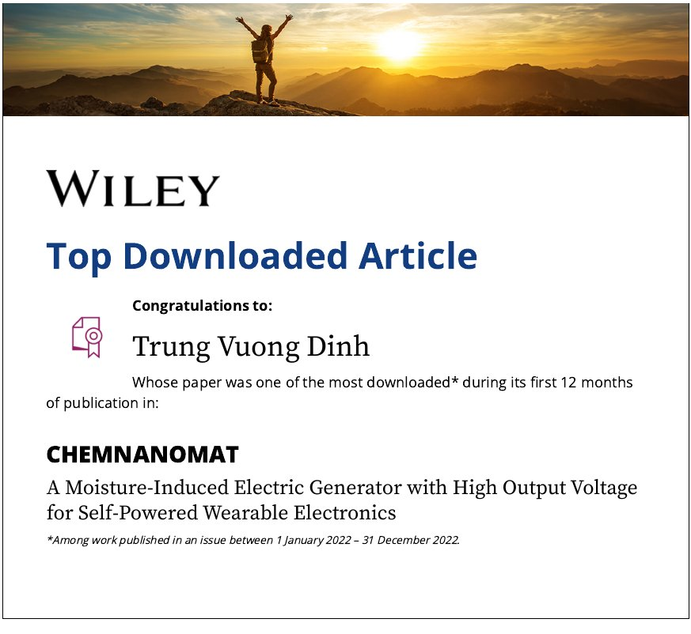

Publications
Journal articles
IF: Journal Impact Factor (Clarivate JCR). Top %: Scopus CiteScore highest category percentile. Both from the latest editions available in the year each manuscript was submitted.
2026
- Weaving Intelligence: Multimaterial Thermally Drawn Fibers Toward AI-Enabled Smart TextilesV.D. Trung, J. Yi, H. Nguyen-Duc, T.N.H. Lo, W. Zhao, C. Dong, F. Sorin, B. Caglar, L. Wei, T. Nguyen-DangAdv. Mater., 38, e73574 (2026). DOIIn the newsIF 29.1Top 1% Scopus2025 metrics · submitted 2026
- Percolation-Tuned Mesostructured Capacitive Sensor for Physiological Signal Detection and Acoustic RecognitionW. Zhao, V.D. Trung, Y. Zhang, X. Hong, K. Chen, J. Natsuki, L. Cui, T. NatsukiChem. Eng. J., 545, 179945 (2026). DOIIF 12.5Top 4% Scopus2025 metrics · submitted 2026
- Skin-Inspired Controllable Microcrack Electronic Skin with High Signal-to-Noise Ratio for High-Fidelity Pulse Wave MonitoringW. Zhao, V.D. Trung, Y. Zhang, X. Su, X. Hong, L. Cui, X. LiuAdv. Fiber Mater. (2026). DOIIF 22.6Top 1% Scopus2025 metrics · submitted 2026
- Sewn Textile Strain Sensors: Impact of Contact-Regulating Stitch Parameters on Strain Sensing PerformanceX. Han, J. Natsuki, Y. Sun, V.D. Trung, T. NatsukiJ. Text. Inst., 1–12 (2026). DOIIF 1.6Top 25% Scopus2025 metrics · submitted 2026
- From Battery Recycling to Ion-Transport-Triggered Hydrovoltaic Capacitor Employing Graphene Nanosheet Anode Prepared via One-Step Cathodic Plasma ExfoliationP.-A. Le, V.D. Trung, W. Zhao, T. Nguyen-Dang, X.V. Nguyen, X. Han, J. Natsuki, N.T. Tung, T. NatsukiChem. Eng. J., 529, 172769 (2026). DOIIF 13.2Top 3% Scopus2024 metrics · submitted 2025
2025
- Arterial Pulse Dynamics Monitoring via Ultrasensitive Sandwich Soft ElectronicsW. Zhao, V.D. Trung, J. Natsuki, J. Tan, W. Yang, T. NatsukiAdv. Fiber Mater., 7, 1615–1631 (2025). DOIIF 21.3Top 2% Scopus2024 metrics · submitted 2025
- Hierarchical Synergistic Engineering for Machine Learning-Assisted Gesture Recognition and Integrated Thermal ManagementW. Zhao, V.D. Trung, F. Li, Y. Zhang, H. Li, J. Natsuki, J. Tan, W. Yang, T. NatsukiAdv. Fiber Mater., 7, 1495–1513 (2025). DOIIF 21.3Top 2% Scopus2024 metrics · submitted 2025
- Empirical Modeling of Seasonal Cooling Performance Based on Test Devices Using Zinc Oxide/Low-Density Polyethylene Passive Cooling MembranesY. Zhang, J. Natsuki, C. Weng, V.D. Trung, Y. Wang, L. Cui, T. NatsukiPolymers, 17, 1420 (2025). DOIIF 4.9Top 15% Scopus2024 metrics · submitted 2025
- Synergistic Interfacial Engineering for Ultrasensitive Bionic Tunable Strain Sensors with Robust Sensing Stability and Integrated Thermal ManagementV.D. Trung, W. Zhao, J. Natsuki, J. Tan, W. Yang, T. NatsukiChem. Eng. J., 508, 161056 (2025). DOIIF 13.2Top 3% Scopus2024 metrics · submitted 2025
- Iontronic Dual Pressure-Humidity Sensor Based on Poly(Vinyl Alcohol)/Phosphoric Acid/Ni-Al Layered Double Hydroxide Hydrogel@Melamine Sponge for Advanced Wearable ElectronicsV.D. Trung, W. Zhao, P.-A. Le, Y. Zhang, Y. Sun, J. Natsuki, J. Tan, W. Yang, T. NatsukiMater. Res. Bull., 186, 113357 (2025). DOIIF 5.3Top 8% Scopus2023 metrics · submitted 2024
- Textile-Based Interdigitated Electrode Piezoresistive Sensor: Materials, Fabrication and Applications – A ReviewW. Zhao, V.D. Trung, X. Hong, Y. Sun, Y. Zhang, J. Natsuki, J. Tan, W. Yang, T. NatsukiJ. Alloys Compd., 1014, 178764 (2025). DOIIF 5.8Top 6% Scopus2023 metrics · submitted 2024
2024
- Hydrovoltaic–Piezoelectric Hybridized Device for Microdroplet-Pressure Dual Energy Harvesting and Piezo SensingV.D. Trung, P.-A. Le, J. Natsuki, W. Zhao, T.V.B. Phung, J. Tan, W. Yang, T. NatsukiChem. Eng. J., 496, 154164 (2024). DOIIF 13.3Top 2% Scopus2023 metrics · submitted 2024
- AgNPs/CNTs Modified Nonwoven Fabric for PET-Based Flexible Interdigitated Electrodes in Pressure Sensor ApplicationsW. Zhao, J. Natsuki, V.D. Trung, H. Li, J. Tan, W. Yang, T. NatsukiChem. Eng. J., 499, 156252 (2024). DOIIF 13.3Top 2% Scopus2023 metrics · submitted 2024
- Enhanced Functionalization of Nonwoven Fabric by Spray Coating AgNPs/CNTs Solution Prepared by a One-Step MethodW. Zhao, V.D. Trung, H. Li, J. Natsuki, J. Tan, W. Yang, T. NatsukiChem. Eng. J., 494, 153101 (2024). DOIIF 13.3Top 2% Scopus2023 metrics · submitted 2024
- Recent Developments in Droplet-Based DevicesV.D. Trung, P.-A. Le, J. Natsuki, W. Zhao, T.V.B. Phung, T. NatsukiMater. Today Chem., 36, 101943 (2024). DOIIF 7.3Top 17% Scopus2022 metrics · submitted 2023
- An Aluminum-Air Battery/Hydrocapacitor-Inspired Hybrid Device for Energy Conversion from Micro Water DropletsV.D. Trung, J. Natsuki, L. Cui, P.-A. Le, T. NatsukiChem. Eng. J., 480, 148125 (2024). DOIIF 15.1Top 1% Scopus2022 metrics · submitted 2023
2023
- Compact Electrolytic Hydrocapacitor for Direct Harvesting and Storing Energy from Water Droplet Achieving High VoltageV.D. Trung, P.-A. Le, J. Natsuki, T. NatsukiAdv. Mater. Technol., 8, 2300638 (2023). DOIIF 6.8Top 5% Scopus2022 metrics · submitted 2023
- Overview of the Thermal Runaway in Lithium-Ion Batteries with Application in Electric Vehicles: Working Principles, Early Warning, and Future OutlooksP.-A. Le, V.D. Trung, J. Natsuki, T. NatsukiEnergy Fuels, 37, 17052–17074 (2023). DOIIF 5.3Top 16% Scopus2022 metrics · submitted 2023
- The Current Status of Hydrogen Energy: An OverviewP.-A. Le, V.D. Trung, P.L. Nguyen, T.V.B. Phung, J. Natsuki, T. NatsukiRSC Adv., 13, 28262–28287 (2023). DOIHighly Cited Paper (Clarivate)IF 3.9Top 22% Scopus2022 metrics · submitted 2023
2022
- A Moisture-Induced Electric Generator with High Output Voltage for Self-Powered Wearable ElectronicsV.D. Trung, S. Chen, H. Xia, T. Natsuki, Q. NiChemNanoMat, 8, e202200395 (2022). DOITop Downloaded ArticleIF 3.82Top 21% Scopus2021 metrics · submitted 2022

Wiley Top Downloaded Article, ChemNanoMat (published in 2022)

Book chapter
- Artificial Intelligence in Thermally Drawn Multimaterial Fibers: From Distributed Sensing to Neuromorphic Smart Textiles V.D. Trung, T. Nguyen-DangIn V. Robles-Bykbaev (Ed.), Applied Intelligence Annual Volume 2026 (working title), Artificial Intelligence book series, IntechOpen.ISBN 978-1-83635-727-8 · Print ISBN 978-1-83635-728-5 · eBook (PDF) ISBN 978-1-83635-729-2 · ISSN 2633-1403 · DOI 10.5772/intechopen.1010756 (to be assigned)
Patent
- Aircraft Protective Frame (Khung bảo vệ thiết bị bay)L.D. Dung, N.T. Phong, N.D. Hieu, V.D. Trung, N.D. Tung, A. Hajjar Vietnamese Industrial Design Application No. 3-2026-00893, filed 20 Apr 2026, published 15 Jul 2026 (Publication No. 58035). Applicant: VinUniversity. IP Viet Nam record
Conference presentations
2026
From Battery Waste to Self-Charging Energy Storage: A Sustainable Hydrovoltaic Capacitor Based on Plasma-Exfoliated Graphene NanosheetsV.D. Trung, L.N.H. Tien · Vietnam Association of Catalysis and Adsorption (VNACA XIII), Hue, Vietnam
2026
Fiber-Based Wearable Textile Biosensors for Early Diagnostic ApplicationsH.N. Tien, L.N.H. Tien, V.D. Trung, N.D. Tung · 3rd International Conference on Microbiology and One Health, Quy Nhon, Vietnam
2026
A Skin-Inspired Electronic Skin with Tunable MXene Microcracks and High Signal-to-Noise Ratio for High-Fidelity Arterial Pulse MonitoringW. Zhao, V.D. Trung · 3rd International Conference on Microbiology and One Health, Quy Nhon, Vietnam
2023
Al-Air Battery-Inspired Hydrocapacitor for Energy Conversion from Micro Water Droplets Achieving High OutputV.D. Trung, J. Natsuki, P.-A. Le, T. Natsuki · 4th International Workshop on Advanced Materials and Devices, Thai Nguyen, Vietnam